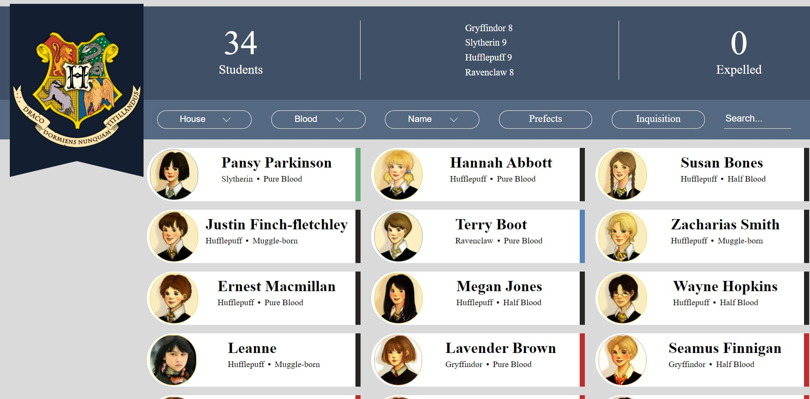
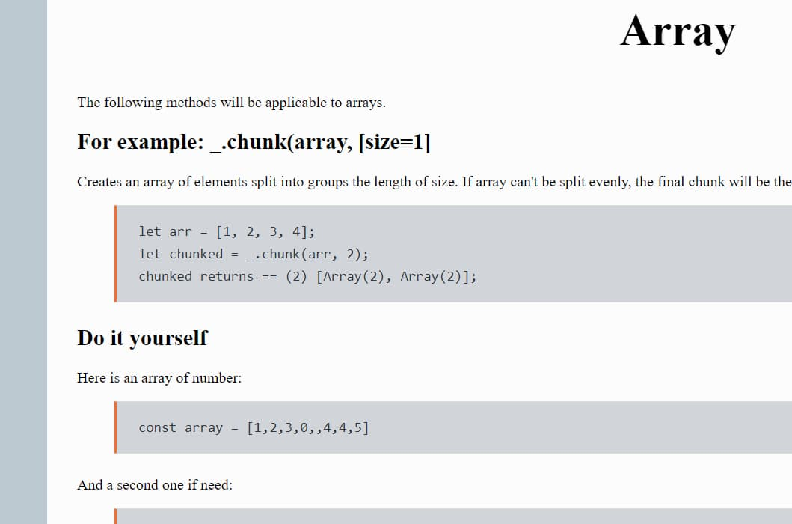

Kopenhagen
For a school project, we were commissionned by Kopenhagen to offer a new design for their website.
Kopenhagen.dk used to be one of the major art calendar for Copenhagen and its surroundings. I
offered a sober tone, luxury-feel design to the new design.
Key ideas: A sober, simple design is most likely the answer
.Série
.Série is a young brand, starting in Copenhagen. Sarah Martet, its founder, is looking to create
hand-made, made-to-order leather accessories. I have worked with her intensively, both on her brand
and upcoming website. As part of the second semester exam at KEA, we were to create a website
working with a local craftman.
Key ideas: Match your design to your client's concept

Hogwarts Database
One of our school projects was to create a student data for Hogwarts. While not being perfect, it's a
project that I am proud of. I think it reflected my actual experience from HR software, and I was
able to have my own user experience guiding the design.
Key ideas: Would you use your own design?

Quick tutorial for lodash
During our introduction to Node.js and NPM, we were to create a small tutorial on the package of our
choice. I decided to create a small preview page for all of the Array methods offered by lodash. It
shows directly what would happen to an array, and uses lodash in its script.
Key ideas: Small interactions always help to learn
Japanese Drums
One of my first personal projects, I wanted to create something simple and fun. Part of the reasons
that I went into web-design was to solve this kind of small puzzles: can I do it? how would I do it?
It is just a quick Drumbeat, made with japanese drums. You can both click and use directional
arrows.
Key ideas: Isn't web-design supposed to be fun for all?